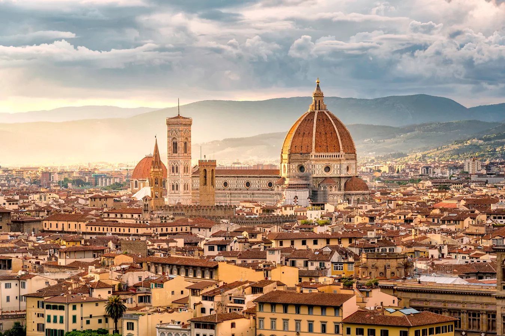

Favourite Places to go
- Tokyo, Japan
- Osaka, Japan
- Seoul, South Korea
- Taiwan
- Boracay, Philippines

Something about Tokyo, Japan
Tokyo is a city of contrasts, with traditional temples and gardens coexisting with cutting-edge technology and fashion. It's a center for anime, manga, and unique subcultures like Harajuku fashion.

Something about Osaka, Japan
While modern and energetic, Osaka also boasts a rich history. Osaka Castle, a major landmark, played a significant role in unifying Japan. Shitennō-ji Temple, one of Japan's oldest Buddhist temples, is another important historical site.
Something about Seoul, South Korea
Seoul is a megacity with a population exceeding 10 million, making it one of the largest in the world.
Something about Taiwan
The island has a complex history, having been colonized by the Dutch, Spanish, and Japanese before becoming part of China and then developing its own distinct identity.
Something about Boracay, Philippines
Boracay Island is renowned worldwide for its powdery white sand beaches, crystal-clear turquoise waters, and breathtaking sunsets.
Places I want to visit
- Amsterdam, Netherlands
- Rome, Italy
- Switzerland
- Iceland
- Florence, Italy 
Something about Amsterdam, Netherlands
Amsterdam is known for its artistic heritage, elaborate canal system and narrow houses with gabled facades, legacies of the city’s 17th-century Golden Age.
Something about Rome, Italy
Often called the "Eternal City", is a place of rich history, captivating culture, and stunning architecture. It's known for its ancient ruins, Renaissance art, and iconic landmarks like the Colosseum and the Vatican City.

Something about Switzerland
A landlocked country in central Europe known for its mountains, watches, chocolate, and cheese.
Something about Iceland
A Nordic island nation in the North Atlantic Ocean known for its dramatic volcanic and glacial landscapes, hot springs, and unique cultural experiences.
Something about Florence, Italy
A city renowned for its art, culture, and historical significance, particularly as the birthplace of the Renaissance.
Table Version of my favourite places and places I want to go
| Favourite Place | Place I want to visit | |||||
|---|---|---|---|---|---|---|
| Location | Image | Something to know | Location | Image | Something to know | |
| Tokyo, Japan | |
Tokyo is a city of contrasts, with traditional temples and gardens coexisting with cutting-edge technology and fashion. It's a center for anime, manga, and unique subcultures like Harajuku fashion. | Amsterdam, Netherlands | Amsterdam is known for its artistic heritage, elaborate canal system and narrow houses with gabled facades, legacies of the city’s 17th-century Golden Age. | ||
| Osaka, Japan | |
While modern and energetic, Osaka also boasts a rich history. Osaka Castle, a major landmark, played a significant role in unifying Japan. Shitennō-ji Temple, one of Japan's oldest Buddhist temples, is another important historical site. | Rome, Italy | Often called the "Eternal City", is a place of rich history, captivating culture, and stunning architecture. It's known for its ancient ruins, Renaissance art, and iconic landmarks like the Colosseum and the Vatican City. | ||
| Seoul, South Korea | Seoul is a megacity with a population exceeding 10 million, making it one of the largest in the world. | Switzerland | |
A landlocked country in central Europe known for its mountains, watches, chocolate, and cheese. | ||
| Taiwan | The island has a complex history, having been colonized by the Dutch, Spanish, and Japanese before becoming part of China and then developing its own distinct identity. | Iceland | A Nordic island nation in the North Atlantic Ocean known for its dramatic volcanic and glacial landscapes, hot springs, and unique cultural experiences. | |||
| Boracay, Philippines | Boracay Island is renowned worldwide for its powdery white sand beaches, crystal-clear turquoise waters, and breathtaking sunsets. | Florence, Italy | A city renowned for its art, culture, and historical significance, particularly as the birthplace of the Renaissance. | |||